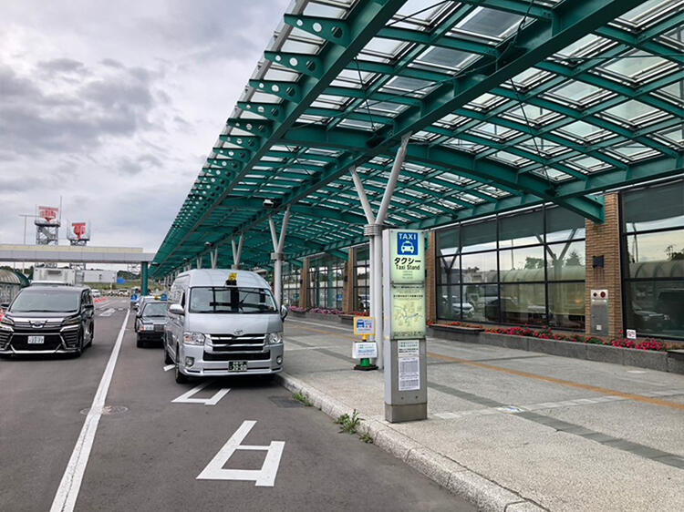

こんにちは！癒湯自適俱楽部です！
皆様は北海道にある「ラビスタ函館ベイ」「ラビスタ函館ベイANNEX」にご宿泊されたことはございますか？
北海道はとにかく広く名所も多いのでどこへ行こうか迷っている方も少なくないはず。
今、観光するなら王道スポットが多い函館がおすすめです！
そこで、癒湯自適俱楽部スタッフが実際に「ラビスタ函館ベイANNEX」に宿泊して来ました。
旅行記第二弾のテーマは「男のひとり旅」
「ラビスタ函館ベイ」とは違った新棟「ラビスタ函館ベイANNEX」の魅力を是非ご堪能ください。
今回もかなりの長文になりますが、ぜひ最後までお付き合いください。
では早速行ってみましょう！
1日目
羽田空港から飛行機で函館へ。機内は平日にもかかわらず満席。会社員と観光客らしき乗客が半々といったところ。
1時間半ほどで函館空港に到着。
本来はバイクに乗って北海道を満喫する予定が、天気がおもわしくなく
急遽レンタカー旅に切り替えての出発となりました。
生憎の雨模様ですが、空港近くでレンタカーを借りてドライブ旅のスタートです！

ちなみに、新幹線でホテルまで行く場合は、東京駅から函館駅まで新幹線で約5時間。新函館北斗駅でJR函館本線に乗り換え。最寄り駅の函館駅からは徒歩約10分程度。
函館駅から市内循環バスを利用してホテルへ向かう場合、バス停「はこだてビール前」で下車。徒歩2分程で到着です。
チェックインまで時間があるので観光地へ出発。
函館といえば五稜郭、ということでまずは五稜郭に向かいます。さすが北海道といったところででしょうか、
スケールが大きい！道中には五稜郭が描かれたマンホールも。
五稜郭は戊辰戦争の舞台でも有名で函館のシンボル的な名所です。
五稜郭タワーは平日でも混雑していました。30～40人程並んでいたので泣く泣く断念。タワーの施設内には新選組の土方歳三の銅像もありました。
生憎の天気と時間の関係で全体を回れなかったので、次回晴れ模様の際にゆっくりとリベンジしたいものです。
この日のランチは「ラッキーピエロ」のハンバーガー。
函館市にしかないお店と現地スタッフに聞き即決！
パティがジューシーで一口ほおばると自然と笑みがこぼれてしまいました。
道民のソウルドリンクとして大人気の「ラッキーガラナ」も一緒に。コーラより薬っぽい味わいでした。
冬の特集「あなたはどの旅を選びますか？」で店舗を紹介しているのでぜひご覧ください。
URL：https://wwws.kyoritsumembers.com/sh_resortyutai/info/2023101112/
雨もやんできたので五稜郭タワーを横目にドライブ再開。
夜は曇り予報だったので晴れているうちに函館山から景色を堪能しました。
絶景スポットで有名なので夜景も見てみたいものです。展望台まではロープウェイで行けます。
それから15分程車を走らせ、断崖から津軽海峡が一望できる立待岬を訪れました。ここはかつて異国船を監視する要所だったそうです。絶壁に打ち寄せる波や風に驚きました。

ドライブを十分楽しんだところで函館市街に戻り「ラビスタ函館ベイANNEX」に到着。
「ラビスタ函館ベイ」も近くに見えます。
こちらは「ラビスタ函館ベイ」の特別な別館というのがコンセプト。
館内は木目調をベースとした和洋折衷様式で函館市街地を思い起こされるような落ち着いた雰囲気です。
早めに到着してしまったので、ウェルカムサービスのコーヒーをいただいて一息ついてからチェックイン。
紅茶とラスクやスコーンなどの洋菓子が用意されています。チェックイン後に早速、紅茶とお菓子をいただきました。
ロビーのソファーでくつろいでから部屋にあがられるお客様も見られました。
1階はバーと売店が併設しています。
バーの営業時間は（月～木）21：00～23：00（金～日）21：00～24：00。
売店は24時間営業。エリア限定のお土産などが購入できます。
人気商品は「いか五郎商店」のチョコレート最中。
サクっとした香ばしい最中、甘さ控えめのチョコレート、そしてザクザク食感のクッキーが絶妙です。
牛乳といっしょにいただくのがおすすめです。
夕食まで時間があるのでまずはお部屋へ。
お部屋のシリンダーキーがレトロでおしゃれ。
ロビーと同様、和洋折衷をモチーフとしたモダンな空間。
備え付けの食器類などのインテリアにもこだわりを感じられます。
お部屋からの眺望も素晴らしく、津軽海峡を景色を楽しめます。
この直接USBケーブルを差し込むタイプの電源コンセントが非常に便利でした。
旅行の時は充電用のACアダプターが割と荷物になるので有難いです。
17：30から夕食のため2階のお食事処「北の番屋」へ。
この日は17：30～の1部と19：30～の2部制でした。
本日の献立はこちら。
道産牛のしゃぶしゃぶとお好みのお寿司をテーブルオーダーでいただける和食会席です。
お寿司は時間内で好きなだけ注文できます。種類が豊富で贅沢ですね。
個人的にうれしかったのは、ウニをおかわりし放題なところ。
新鮮で臭みのない質の良いウニを日本酒とともにいただきました。
現地スタッフのおすすめのお酒は、「男山 国芳乃名取酒」と「郷宝」の2種類。
男山 国芳乃名取酒は辛口でお寿司との相性抜群。郷宝はすっきりとした味わいで海鮮はもちろん煮物などの和食にも合うお酒でした。
スタッフさんのサービスも良く気軽に話しかけられる雰囲気でお腹も心も満たされました。
夕食を堪能した後はお楽しみの大浴場へ。
女性浴場は9階、男性浴場10階です。共立リゾートでは珍しく男女でフロアが分かれています。
チェックイン時に満室と聞いていましたが、かなり広いのでゆったり湯につかることができて快適でした。
湯上りドンリンクが充実。脱衣所にはガラナとペットボトルの水のサービスが。夜だけでなく朝も行っています。
朝は乳酸飲料までありました！
お風呂を出たところで時刻は22時過ぎ。だいぶゆっくりしてしまいました。
ちょうど夜鳴きそばの提供の時間だったので10階湯上り処「空」へ。（営業は21：30～22：30）
定番の醤油ラーメンと共立リゾート初！当館限定の塩ラーメンの2種類あります。せっかくなので限定の塩ラーメンにしました。
夕食でお腹いっぱいのはずが、さらっと食べれるさっぱりとした味わいでした。
温泉で癒されたところでこの日は早めに就寝。
ベッドに入りぼんやりと明日のプランを思い浮かべているうちに気付いたら眠りについていました。
2日目
翌朝、少し早めに目が覚めたので貸切風呂へ。
貸切風呂は、陶器風呂、樽風呂、煉瓦風呂の3種類の用意。
ちょうど空いていたので陶器風呂に入浴しました。
こちらからも津軽海峡を眺めることができます。
貸切風呂にはシャンプー類の用意がないので気をつけましょう。
これはなるべく沢山の方にご利用いただきたいためだそうです。
まだまだ時間があるのでお風呂の後は朝市へ出かけました。
張り切って早く来すぎたのかガラガラ。開店直後でおそらくこれから混み合うのかと。
朝食前で食欲をそそられましたが北海道の食材にこだわった豪華な朝食メニューを楽しみにホテルへ戻ります。

ホテルへ戻り2階のお食事処「北の番屋」へ。7：00～営業しています。（最終入場は9：00まで）
ラビスタ函館ベイアネックスの朝食は和洋折衷のバイキング。
料理台には豊富な料理がずらりと並び目でも堪能できました。
朝食ではなんとお酒が飲み放題！！！
五稜乃蔵（ごりょうのくら）純米 五稜、三千櫻、赤兎馬（芋焼酎）など料理に合うお酒を好きなだけ楽しめます。
この後も車を運転する予定でしたのでやむなく断念。いつかリベンジしたいです。
共立リゾートの朝食はメニューが豊富で毎回迷ってしまいます。今回も一つのトレーにおさまりきらないほどの量に。
海鮮コーナーも充実していて、いくら醬油漬けやまぐろなどが盛りだくさんのよくばり海鮮丼になりました。
夕食のお寿司と同様、新鮮で美味しい海鮮がおかわり自由。
おすすめの一品は、ラビスタ函館ベイアネックス限定のオマール海老のスープ。出汁が効いていて非常に美味しかったです。
さて、ここでクイズです！黄色い飲み物がありますが、こちらはなんでしょうか？
ちなみにオレンジジュースでもマンゴージュースでもありません。
～シンキングタイム～
正解は・・・なんと「黄色いトマトジュース」でした！！！
「天地人トマトジュース 黄金」という商品を提供しています。
原料となるトマトは「イエローミニ」という品種で、酸味は強めでフルーティーなのが特徴。見た目に反して濃厚な味わいでした。
朝食後、チェックアウトを済ませ、ホテルの近くをのんびり散策。
函館のランドマーク「金森赤レンガ倉庫」に向かいました。
ショップやレストランの他にギャラリー、ホールが併設されている商業施設です。
こちらは「烏賊墨染工房 シングラーズ」というお店です。染料にイカ墨を使用している作品を取り揃えています。函館でしか購入できない商品もあるので必見。
実は、ラビスタ函館ベイアネックスのレストランに飾られているアートワークも手掛けています。右の作品は実際に飾られているアートワークです。
この日のお昼は「函館ラーメン西園」。自分の他に10人程並んでいました。
ラーメンの激戦区の函館でも店頭に列ができることは珍しいそうです。名物のネギ塩ラーメンを注文しました。
夜鳴きそばと比べてあっさりとしていてネギのシャキシャキ食感がやみつきになります。
暑かったので、空港に向かう前に「函館牛乳」に立ち寄りソフトクリームを購入。
空港近郊の牧場でしぼった新鮮な牛乳を使っていてとても濃厚な味わいでした。こちらでは乳製品の直売も行っています。
ところで、函館にGLAYのTERUさんの実家があることは有名ですよね。実際に家の近くまで行ってみました。残念ながら、ご本人と遭遇することは叶いませんでした。
最後に立ち寄った場所は「北海道第一歩の地碑」
ここは日本人が初めて北海道に足を踏み入れた場所と言われています。
本当はこの場所から旅をスタートしたかったのですが、天気の良い時にこのロケーションで写真を撮りたかったのであえて最終日にしました。

名残惜しいのですが、レンタカーで函館空港に向けて出発。東京には夕方頃到着しました。
こうして1泊2日の函館男のひとり旅は終了。
今回の宿「ラビスタ函館ベイANNEX」は、旅館やホテルには付き物のチェックインや大浴場や朝食会場における「混雑」に見舞われることなく、
ワンランク上の空間で充実したひとときを過ごすことができました。
函館に行かれる際は、ぜひ「ラビスタ函館ベイANNEX」でのんびり大人の旅をお楽しみください。